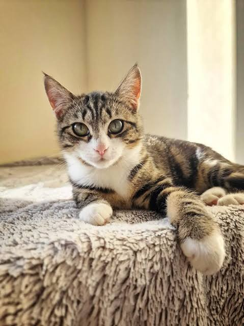

Available for Adoption
Milo
Milo was rescued after being abandoned near a marketplace. He is friendly, playful and enjoys being around people.
View Adoption InformationPAWS Animal Welfare Society Malaysia
PAWS Animal Welfare Society Malaysia is dedicated to rescuing abandoned cats and dogs, promoting responsible pet ownership, encouraging adoption, and creating public awareness about animal welfare across Malaysia.
PAWS Animal Welfare Society Malaysia is a non-profit animal welfare organization dedicated to rescuing, rehabilitating, and rehoming abandoned cats and dogs. Through education, adoption programmes, and community engagement, PAWS aims to reduce the number of stray animals while promoting responsible pet ownership throughout Malaysia.
reduceThousands of cats are abandoned every year. Together, we can make a difference.
Many cats are abandoned due to irresponsible ownership, leaving them without food, shelter, or medical care.
Stray cats often suffer from diseases and injuries. Vaccination and treatment help improve their quality of life.
Adopting a rescued cat gives them a second chance and helps reduce the number of homeless animals.
Together, small actions can create meaningful changes for animals in need.
Animals Under Shelter Care
Successful Adoptions
Volunteers and Supporters
Everyone can play a role in protecting abandoned cats.
Give rescued cats a safe and loving home instead of buying from breeders.
Support food, medical treatment, vaccination, and shelter maintenance.
Help with rescue work, feeding, cleaning, fostering, and awareness campaigns.
Abandoning pets is not only irresponsible, but it also exposes cats to hunger, disease, road accidents, and cruelty. Our campaign encourages Malaysians to adopt, neuter, vaccinate, and care for their pets responsibly.
Read Awareness Tips